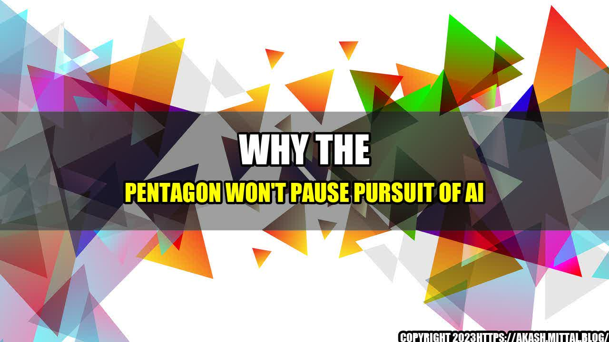

Why the Pentagon Won't Pause Pursuit of AI

Picture this scenario – a soldier on the battlefield trying to make a split-second decision that could mean the difference between life and death. His mind is racing with information overload, and he needs to act fast. Now imagine if he had artificial intelligence (AI) technology by his side, giving him real-time insights and recommendations to help him make the right choice. This is the kind of scenario the Pentagon is striving to make a reality through its pursuit of AI.
Despite concerns over the ethical implications of using AI in warfare, the Pentagon is not showing any signs of slowing down in its efforts to develop and implement this technology. This was made clear by the recent statement made by Chief Information Officer (CIO) Dana Deasy's deputy, Peter Ranks, during a conference in Washington. Ranks said that the Pentagon won't pause the pursuit of AI and will continue to develop and deploy the latest technologies across its systems.
AI in Military
But why is the Pentagon so fixated on AI, and what are the quantifiable benefits it offers to the military? Here are a few examples:
- Enhancing situational awareness: AI technology can analyze multiple streams of data in real-time, providing soldiers with a better understanding of their surroundings. For example, it can identify potential threats, monitor enemy movements, and assist with navigation.
- Improving decision-making: AI can assist commanders in making faster and more informed decisions on the battlefield. For example, it can provide recommendations on target selection, troop movements, and response tactics.
- Reducing risk: AI can help to minimize the risks associated with military operations. For example, it can be used to identify and neutralize improvised explosive devices (IEDs), which are a common threat in conflict zones.
Why AI is Essential for the Future of Warfare
While there may be concerns over the use of AI in warfare, there are several compelling reasons why it is essential for the future of military operations. Here are three key points:
- AI can save lives: By enhancing situational awareness and improving decision-making, AI can help to minimize casualties on the battlefield. It can also assist with medical care and triage, ensuring that injured soldiers receive the best possible treatment.
- AI can give the military a competitive edge: In an age where technology is evolving rapidly and other countries are investing heavily in AI, the US military cannot afford to fall behind. AI can give the military a significant advantage in terms of intelligence gathering, target selection, and response times.
- AI can help to reduce costs: While developing and implementing AI technology may come at a cost, the long-term benefits are likely to outweigh the initial investment. By using AI to enhance efficiency and reduce waste, the military can save money in the long run.
and Case Studies
It's important to remember that behind every technological development in the military, there are real soldiers who are impacted. To illustrate the significance of AI in the military, here are a few personal anecdotes and case studies:
- Air Force Master Sergeant Eric stands on the side of the road in Afghanistan, staring at a glowing tablet bristling with new digital intelligence tools. With facial recognition technology, he can finally identify faces in a sea of anonymity. With software that maps and analyzes the relationships between 12,000 people, at a glance he detects clusters of insurgents in the tangle of tribal alliances.
- During a military training exercise, a group of soldiers used artificially intelligent drones to navigate a maze, identify targets, and perform reconnaissance missions. They completed the exercise much faster and with greater accuracy than they could have with human pilots.
- The US military used AI to identify and track a North Korean missile launch in real-time, allowing them to respond quickly and effectively. Without AI, this kind of response may not have been possible.
Conclusion
In conclusion, there is no denying the potential benefits of AI in military operations. From enhancing situational awareness to improving decision-making, AI can give soldiers the tools they need to succeed on the battlefield. While there may be concerns over the ethical implications of using AI in warfare, it's clear that the Pentagon is fully committed to pursuing this technology. As the technology continues to evolve, it's likely that we will see even more innovative uses of AI in the military.
- AI offers quantifiable benefits to the military, including enhancing situational awareness, improving decision-making, and reducing risk.
- AI is essential to the future of military operations, as it can save lives, give the military a competitive edge, and reduce costs in the long run.
- A personal anecdote or case study can illustrate the significance of AI in the military, highlighting its impact on real soldiers and missions.
References and Hashtags
References:
- https://www.c4isrnet.com/artificial-intelligence/2019/10/23/pentagon-is-not-going-to-pause-ai-efforts-party-because-of-ethics-concerns/
- https://www.defensenews.com/digital-show-dailies/modern-day-marine/2019/09/24/artificial-intelligence-is-helping-troops-and-the-equipment-they-use/
- https://www.popularmechanics.com/military/research/a24423457/military-drones-ai-impossible-flight-maneuvers/
Hashtags: #AI #Military #Pentagon #Ethics #SituationalAwareness #DecisionMaking #Risk #CompetitiveEdge #CostReduction
Category: Military Technology
Curated by Team Akash.Mittal.Blog
Share on Twitter Share on LinkedIn